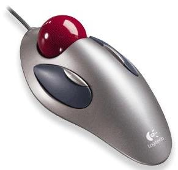

Looking for a Left-Handed Gaming Mouse and after a little research I have found nothing.
Does anyone know of any high quality mice that are left-handed?
Most mice are ambidextrous.
He’s looking for a gaming mouse, though. A gaming mouse has extra buttons and they are usually placed on the left side of the mouse. A left handed person wouldn’t be able to use such a mouse to it’s full potential.
And to directly answer the question, sorry I don’t know of anything. I don’t use gaming mice.
Razer has some good Left-Handed Gaming Mice
My (gaming) mouse is completely symmetric, so I don’t see how it couldn’t serve as a left-handed gaming mouse.
note: I’ve tried over 10 different mice for gaming and that one is the best, it’s even more responsive than a G5 in my opinion.
https://www.razerzone.com/index.php?main_page=product_info&products_id=72
Go there and use the configuration to make your perfect mouse, they got some good ones.
Thanks for the help I bought:
- Razer Boomslang™ Collector’s Edition 2007
- Razer eXactMat™ Duo Precision Gaming Surface
Both were bought from amazon, although I used razerzone to find the product I wanted.
Thanks!
Even though you have found a solution, I use the Razer Lechesis gaming mouse. It’s ambidextrous and is amazing. On the fly DPI changing greatly increases my capability and was worth the money [100$ rounded]. Glad you found some solutions.
saw this thread and felt i had to reply. There is sadly no major gaming grade left-handed mouse.
What you can get is an MX610 Left-Handed offered by logitech:
https://www.logitech.com/index.cfm/428/168&hub=1&cl=us,en
It is wireless and ergonomically left handed so it should fit well given time.
But it has quite a few buttons and functionality iv been using it for a couple of years now and its great but for gaming u need to put the receiver on a USB extended cable and tape it to within 6" of your mouse otherwise you will definatly experience mouse lag in games so ill save you the trouble and tell u now. It’s not great but in my opinion its the best mouse currently available to left-handed users/gamers. Were such a small demograph for sales were only going to see new ones in drabs here and there, but this is a nice mouse to pass the time while we wait 
Gaming mice seem a little ridiculous to me. Do the LED’s make your game that much better?
I have a gaming keyboard, because I wanted something sturdy that I could control my music with, and $60 ain’t bad, but a mouse is a mouse IMO.
Wireless mice are bad. Especially for gaming.
I wouldn’t buy most of this gear for the extra buttons, since for whatever reason I avoid shortcuts and just press things on-screen, but for the looks, durability, and some of that other stuff like sensitivity.
I’m one of the few people I know that games much better (and actually, I’m also much more productive and quicker in general) with a trackball mouse like this:

Only thing I miss on the trackball is the scrollwheel.
Having a few extra buttons on the mouse can make a huge difference in how you logically arrange your keys. It makes the difference between me being able to play psychonauts and HL2 with a gamepad, and it also means I can play Secret of Monkey Island Special Edition without needing to use the keyboard at all. Heck, it’s even nice for internet browsing, since the extra buttons act as forward and back buttons.
https://www.newegg.com/Product/Product.aspx?Item=N82E16826105183
This is what I use. It’s usb, ambidextuous, wired, not overly huge, and laser, which i think is even better than just regular optical, but I’m not sure. It’s not too light and the scroll wheel has a distinct notched spin instead of being smooth spin, which helps greatly in keeping track of scrolling through weapons and such. The wire is nice and long, but not thick and cumbersome. The $30 price tag isn’t too bad either. It’s just about the cheapest ambidextrous mouse I’ve seen that has more than 3 buttons.
I like it because it lets me keep aiming and all my weapon related tasks tied to the mouse hand, creating a much more logical setup.